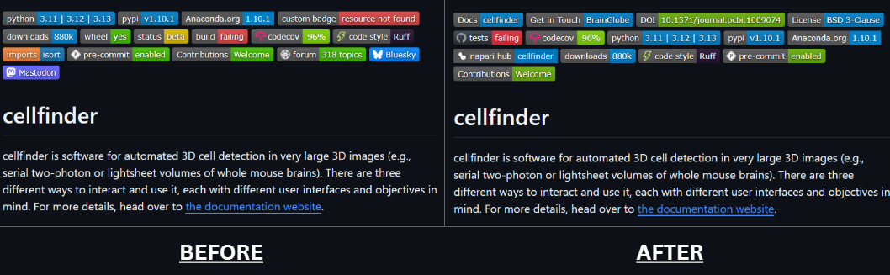
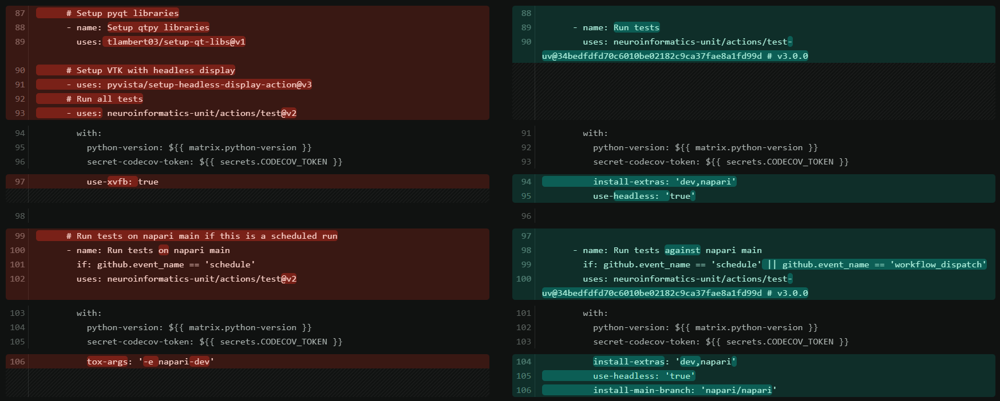
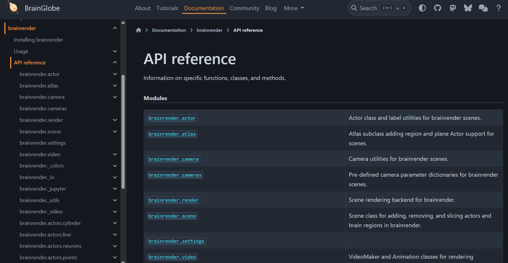

GSoC 2026: Miscellaneous maintenance work on BrainGlobe overall infrastructure#
Introduction#
Hi, I’m Varun. This summer I worked with BrainGlobe and the Neuroinformatics Unit as part of Google Summer of Code.
Project: BrainGlobe: Miscellaneous maintenance work on BrainGlobe overall infrastructure
Mentors: Alessandro Felder, Igor Tatarnikov, Harry Carey
This post walks through what I worked on over the summer, how the approach often evolved through discussion with my mentors, and why the work matters.
Before GSoC#
I had already been contributing to both BrainGlobe and the wider Neuroinformatics Unit before this project started, which is part of what got me interested in this kind of infrastructure work in the first place. A few examples: refactoring NiftyReg command execution in brainreg to handle paths with spaces correctly (#267), adding an early check for existing output directories during atlas generation in brainglobe-atlasapi (#733), fixing anisotropic voxel scaling for cellfinder points (#572), consolidating docs dependencies in ethology (#131), cleaning up packaging and pre-commit tooling in python-cookiecutter (#161), and moving long-running tasks to a threaded worker in brainglobe-stitch (#62).
The problem#
BrainGlobe is not a single codebase. It is an ecosystem of packages, covering atlas tools, registration, segmentation, visualisation, and more, and each package evolved somewhat independently. That is good for modularity, but it also means small inconsistencies build up over time: different repositories end up with different CI setups, different pre-commit hooks, mismatched README badges, and documentation that does not quite come together as a whole.
None of this is a bug exactly, but it does make the ecosystem harder to navigate, both for new contributors and for the maintainers themselves. My project focused on addressing this, and figuring out where the effort would matter most was very much a joint effort with my mentors.
Project Overview#
Almost every task involved making changes across a dozen or more repositories, each with its own setup and conventions. So, it was not enough to get something working in one place. I also had to make sure the changes worked across the different repositories without interfering with anything that was already there. Keeping things consistent across the repositories became an important part of the project.
The first inconsistency was small on the surface, but surprisingly visible: README badges. Every repository had its own combination of badges for documentation, tests, PyPI, licensing, and other services, often in different orders and formats, with some missing altogether. After discussing a few approaches with my mentors, this became a good candidate for automation. A combination of Bash and Python scripts now clones a repository, rebuilds its badge block from a canonical template, and opens a pull request automatically.
Making that reliable meant handling quite a few details that are easy to overlook. Documentation URLs had to be inferred from PyPI metadata, package availability on conda-forge and napari hub had to be detected, DOIs containing hyphens needed to be escaped correctly for shields.io, and repositories without trove license classifiers needed a different way of identifying their license. Once those cases were accounted for, the same process could be applied consistently across the organisation. The result is a small but useful improvement: anyone browsing BrainGlobe repositories can now understand their documentation, testing, and distribution status at a glance.
{kind=link}

Badge section before and after standardisation
Badges were only one visible difference between repositories. A much more substantial source of variation was how their tests were run. BrainGlobe had traditionally relied on tox and tox-gh-actions for testing across Python versions, and moving that infrastructure to uv provided an opportunity to make those workflows both simpler and faster. The migration scripts handle the workflow changes automatically, including dynamically pinning GitHub Action SHAs through the GitHub API. To avoid repeatedly querying the API for the same actions across repositories, the scripts memoise the resolved SHAs and reuse them on subsequent requests.
The rollout also brought up an unexpected issue. A change in cellfinder caused the headless napari tests to fail because the Xvfb wrapper was no longer being set up correctly. I had to dig into how GITHUB_ENV persists between steps and how headless displays are configured in CI to understand why the new workflow behaved differently. This eventually led to a bug report in xvfbwrapper.
{kind=link}

Full diff: complete workflow change
Comparing tox versus the uv based workflow (Cellfinder)
The same consistency problem appeared one step earlier in the development process, before code ever reached CI. The .pre-commit-config.yaml files across the organisation had accumulated different hook versions and different combinations of formatting and linting tools. A Python script paired with a Bash orchestrator now standardises these configurations, replacing black with ruff-format, updating hook versions, and establishing a common baseline while preserving repository-specific checks where they are needed.
This gives contributors a much more predictable experience across BrainGlobe. The same formatting and linting expectations apply regardless of which repository they happen to be working in, and reviewers can spend less time pointing out differences that are purely stylistic.
Documentation was another place where small inconsistencies could have a disproportionate effect on users. BrainGlobe’s documentation site generates API references directly from package docstrings using Sphinx and autodoc, but brainrender was not yet part of that pipeline. Integrating it brings its API reference into the same automated documentation system used by the other packages, keeping the published reference much closer to the actual source code.
{kind=link}

Auto-generated brainrender API reference page
There was also an architectural lesson behind all of this automation. The original idea was to use a dedicated GitHub App to apply organisation-wide changes. However, the simpler solution turned out to be the better one: clone the repository, patch what needs changing, open a pull request, and move on to the next repository. It provides the same organisation-wide automation without introducing another service to deploy and maintain. More importantly, it kept the automation understandable and easy to extend.
Acknowledgements#
This project gave me a much deeper understanding of maintaining a multi-repository ecosystem, while developing skills beyond coding such as communicating with maintainers and collaborating through reviews. It also encouraged me to contribute to other well-established codebases outside BrainGlobe, which was one of the most rewarding parts of the summer.
I am grateful to my mentors for their guidance throughout the project, and to the BrainGlobe and Neuroinformatics Unit community for being such a welcoming place to contribute. Thanks also to Google Summer of Code for the opportunity.